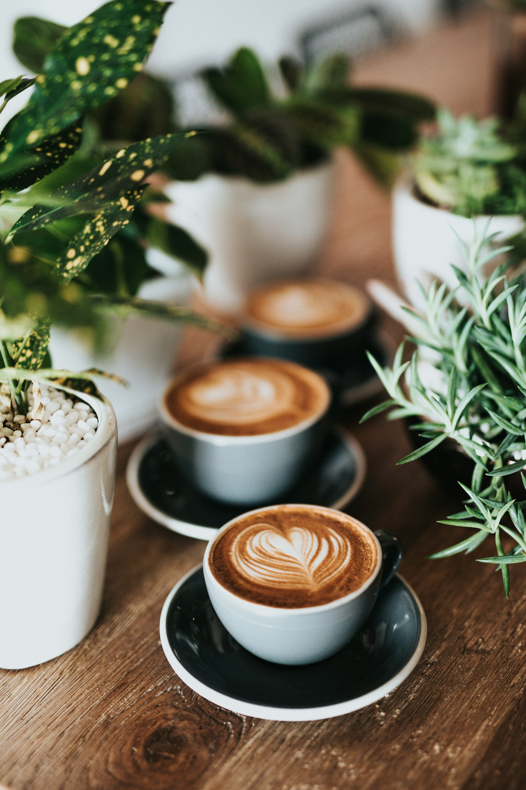

CULTURA DEL CAFÉ · 4 MIN DE LECTURA
El placer de una pausa
Hay días en los que todo parece ir demasiado rápido. Una taza de café puede convertirse en una pequeña invitación a detenernos: dejar el teléfono a un lado, respirar y prestar atención a lo que tenemos delante.
La idea de Café Aurora nace de ese momento cotidiano. Esta propuesta no busca llenar la agenda de actividades, sino imaginar un espacio donde conversar, leer unas páginas o simplemente disfrutar de una bebida.
El ritual también importa
Escuchar el agua, observar cómo cambia el color de la bebida y percibir su aroma forman parte de la experiencia. Preparar un café puede ser una tarea sencilla, pero hacerla con atención cambia nuestra manera de vivirla.

Una mesa para compartir
En Aurora imaginamos mesas para encuentros espontáneos y rincones para quienes prefieren estar a solas. Lo importante es que cada persona encuentre su propia forma de disfrutar la pausa.
Este sitio reúne esa idea a través de fotografías, textos y videos. Puedes recorrer la galería de momentos o descubrir otras miradas en nuestra selección audiovisual.
“A veces, un buen comienzo cabe en una taza.”